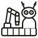

Sing along
Drag to look around. Keys 1 to 6 on your keyboard play the notes.

SO-101 Piano TeacherA robot arm plays a note. You sing it back. It tells you if you are flat or sharp.
Drag to look around. Keys 1 to 6 on your keyboard play the notes.